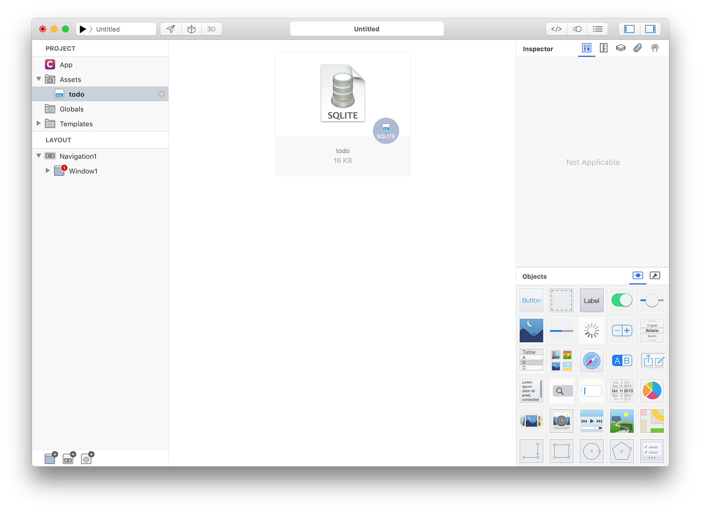
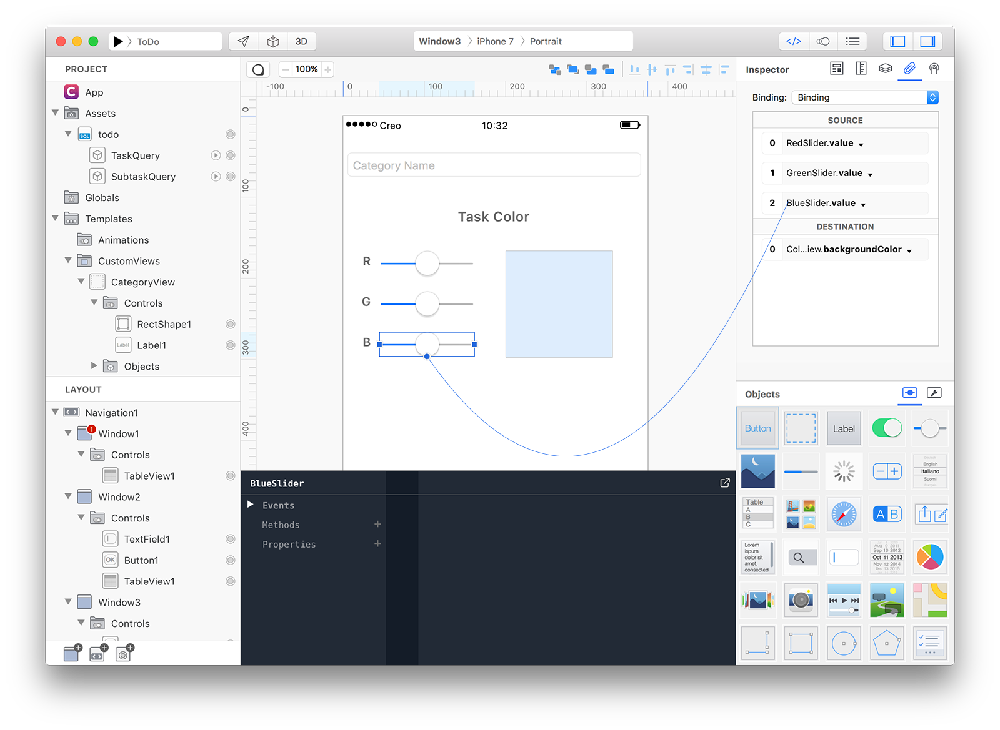

ToDo
Concepts
- The ToDo tutorial implements a simple productivity app that it is able to handle tasks and subtasks. It will show you how to manage (read and write) data contained into a sqlite database and it will introduce you nice features like bindings and window's transactions.
Database
- In this simple tutorial we have prepared a pre-filled sqlite database that contains two tables:
- Task (id INT PRIMARY KEY, name TEXT, color TEXT).
- Subtask (id INT PRIMARY KEY, task_id INT, name TEXT).
- Each subtask is related to its main task by the task_id field. The color field in the Task table is of type TEXT because Creo has built-in color conversion capabilities between an hex string and a color.
Overview
- ToDo application will have three windows. Window1 will be used to list all the main tasks from the Tasks table. Window2 will list all the subtasks related to the task selected by the user in Window1. Window3 will be used to create new task with an associated color. Window3 will be a modal window opened when the user will press the + button from the Window1 navigation bar.
Classes
Assets
1 Create a new empty Creo project and start by dragging the todo.sqlite database into the Assets folder (then press Yes to the object conversion question).

2 Create a new database query object by selecting "New Database Query" from the database contextual menu:

3 In the Query Editor just drag the Task table into the SQL edit field and the sql query will be automatically created for you (you can also manually enter it). You can optionally press the Run button to test the result of your query:

Rename Query to TaskQuery.
4 Create another database query object. In the Query Editor drag the Subtask table into the SQL edit field and then modify it to "SELECT * FROM main."Subtask" WHERE task_id=1;" (we use 1 as an example just to be able to visualize the query at design time) but at runtime that query will change the task_id according to user's selection):

Rename Query to SubtaskQuery.
5 Create a CustomView by dragging a View object from the Object panel to the Templates folder:

6 Rename CustomView to CategoryView and the modify its frame with width:375 height:46. Drop a RectShape and a Label into the CustomView and apply to them the following settings from the Inspector:
- RectShape1 x:6, y:6, width: 4, height:35
- RectShape1 tickness: 0
- Label1 x:16, y:1, width: 309, height:44

7 A CustomView is an object and so it can have its own properties and methods. It is now time to expose some properties to the outside. Select the Exposed Properties panel from the Inspector and drag the binding knob from the RectShape1. Configure the exposed property to be named Color and to be internally bound to the RectShape1.fillColor property:

8 Do the same for the Label and drag the binding knob from the Label1 to the Exposed Properties Inspector. Configure the exposed property to be named Name and to be internally bound to the Label1.text property:

9 Our CategoryView object is now ready to be used. Drag a TableView control from the Objects panel into the Window1 and resize it to be as big as the Window:

10 Here is where the magic happens. Connect your TableView with a CustomView and a DataSet. All you have to do is to configure the Cell and Cell Properties sections into the Inspector. Identifier is a cell property that should be used to bind DataSet unique identifier, in the case of a database it is usually its primary key column. Name and Color are the two properties you just exposed from the CategoryView custom view.

11 As you can see from the Navigation Bar, the Window1 title is inherited from the current window name. It would be better to have a more appropriate title. Select Window1 and change the property Title in the Navigation Bar section to ToDo.
12 Time for NavigationBar customization. Select Navigation1 and set Title Attributes color and Tint Color to 656565FF.

13 Select Window1 and in Navigation Items add a new System Add right button.

14 The first Task window is now completed, we now need to create a window that can contains the subtasks of the selected task. Start by creating a new Window:

15 Drop a TextField (TextField1) control into Window2 and set the following properties:
- Placeholder: New Entry...
- Border Style: None
- Frame: (5, 64, 344, 30)

16 Drop a Button (Button1) control into Window2 and set the following properties:
- Title: +
- Typography: size: 18, color: C0C0C0FF
- Frame: (351, 70, 24, 24)

17 Drop a TableView (TableView1) control into Window2 and set the following properties:
- Cell Template: Subtitle
- Cell DataSet: todo.SubtaskQuery
- Height: 44
- Cell Properties Text: name
- Cell Properties Identifier: id
- Frame: (0, 94, 375, 573)

Select Window2 and change its Title under Navigation Bar to Details.
18 So far so good but there are some important steps missed out from our tutorial. A way to connect user's selection in Window1 to sub-tasks details in Window2, a way to create new subtasks and a way to remove a subtask from the list. Let's start from the beginning.
What we would like to achieve is to list all the subtasks related to the task the user selected in Window1, so we need a way to tell Window2 what task the user selected. A Window is an object (like any others in Creo) that can have methods and properties and a property is what we really need here. Start by selecting Window2 and then open the Code Editor.
To create a new property press the + button near the Properties label. A var1 property is created, rename it to identifier (editing its name near the var label).

Window2 object has now an identifier property that you can access via code using the dot notation: Window2.identifier. This property will be used to store the identifier of the selected task from Window1.
19 We now need to find a way to be notified every time a user selects a row into a TableView. If you read the TableView documentation you can see that it has a DidSelectCell event. So, select TableView1 inside Window1, expand the Events tab and select the DidSelectCell event.
The first parameter is the cell that the user selected and it has an identifier property (bound to the query identifier in this case). Write the following code to set Window2 identifier property and to open Window2 inside the current navigation (if any):
Window2.identifier = cell.identifier;
Window2.open();
20 With the above code each time a user selects a row into the TableView1, the Window2 identifier property is set to the cell's identifier and Window2 is then opened. We now need to perform a query to extract the right row from the database based on this identifier. If you read the Window documentation you can see that it has a WillShow event called each time the Window is about to be displayed. It seems the perfect place to write our code. So, select Window2, expand the Events tab and select the WillShow event.
The following code will perform a new query based on the current identifier property:
// build sql based on identifier instance variable set by Window1
var sql = "SELECT * FROM Subtask WHERE task_id=\(identifier);";
// update query sql and re-run it
// there is no need to tell TableView1 to reload its DataSet
todo.SubtaskQuery.sql = sql;
todo.SubtaskQuery.run();
// reset editfield
TextField1.text = "";

21 At this point we should start adding code to write to the sqlite database because we would need to both delete a subtask and add a new one in Window2. We could write all the sql write statement into the various actions (as we did in the previous WillShow event) but I prefer to isolate the code in a central point for easier readability and maintenance. So select the todo database object and add the following methods:
// add a new named subtask associated with a taskid
func addSubtask (taskID, name) {
var sql = 'INSERT INTO Subtask (task_id, name) VALUES (\(taskID), "\(name)")';
todo.execute(sql);
}
// add a new main task with a specified color
func addSubtask (name, color) {
var sql = 'INSERT INTO Task (name, color) VALUES ("\(name)", "\(color)")';
todo.execute(sql);
}
// removed a subtask specified by its id
func removeSubtask (subtaskID) {
var sql = "DELETE FROM Subtask WHERE id = \(subtaskID)";
todo.execute(sql);
}
// remove a task and all its associated subtasks
func removeTask (taskID) {
// delete from the task table
var sql = "DELETE FROM Task WHERE id = \(taskID)";
todo.execute(sql);
// remove entries from the subtask table
sql = "DELETE FROM Subtask WHERE task_id = \(taskID)";
todo.execute(sql);
}

22 We now have all the required code to write to a database, we just need to call it in the right place. Select Button1 in Window2 and in the Action event write the following code:
// sanity check
var value = TextField1.text;
if (value.length == 0) return;
// inser new subtask
todo.addSubtask(identifier, value);
// force table reload
TableView1.reload(true);
// reset insert
TextField1.text = "";
Keyboard.hide();

23 Select TableView1 in Window2 and in the CommitEdit event write the following code (the CommitEdit event is called each time a swipe gesture is used inside a TableView):
if (editingMode == TableViewCellEditingStyle.Delete) {
todo.removeSubtask(cell.identifier);
return true;
}

24 We now have finished our work in Window2. Just one final part is missed for a fully featured app, a way to create new main Task, so as we did in step 14 create a new Window3 and set Visibility setting to Hidden in its Navigation Bar inspector.
It is now time to fill Window3, so drop 12 controls with the following properties:
- EditField (NameField)
- Placeholder: Task Name
- Border Style: Rond Rect
- Frame: 5, 45, 362, 30
- Label (ColorLabel)
- Text: Task Color
- Typography: Style Bold, Size 17, Alignment Center, Color 656565FF
- Frame: 107, 102, 157, 44
- View (ColorView)
- Frame: 200, 166, 132, 132
- Label (RedLabel)
- Text: R
- Typography: Style Bold, Size 15, Alignment Right, Color 656565FF
- Frame: 6, 156, 28, 44
- Label (GreenLabel)
- Text: G
- Typography: Style Bold, Size 15, Alignment Right, Color 656565FF
- Frame: 6, 206, 28, 44
- Label (BlueLabel)
- Text: B
- Typography: Style Bold, Size 15, Alignment Right, Color 656565FF
- Frame: 6, 256, 28, 44
- Slider (RedSlider)
- Frame: 44, 166, 118, 31
- Slider (GreenSlider)
- Frame: 44, 216, 118, 31
- Slider (BlueSlider)
- Frame: 44, 266, 118, 31
- RectShape (BottomRect)
- Fill Color: F9F9F9
- Border Color: A4A4A4B9
- Border Mask: Top only
- Frame: 0, 623, 375, 46
- Button (CancelButton)
- Title: Cancel
- Typography: Color 656565FF
- Frame: 0, 622, 74, 44
- Button (SaveButton)
- Title: Save
- Typography: Style Bold, Color 656565FF
- Frame: 301, 622, 74, 44

25 User interface for Window3 is almost finished, we now need to write some code and connect some logic. Select CancelButton and in the Action event write the following code:
Window3.close();
Then select the SaveButton and in the Action event write the following code:
// get values entered by user
var name = NameField.text;
var color = ColorView.backgroundColor.hex();
// sanity check
if (name.length == 0) return;
// write values to database
todo.addTask(name, color);
// close window
Window3.close();

25 Everything seems to be correctly setup but one important step is missed. How can the user select a custom color for the task? Using a Binding! A Binding is a connection between values from different objects and Creo extends even more this powerful concept. Start by connecting RedSlider to ColorView:

A new Binding object will be automatically created for you (connect RedSlider.value to ColorView.backgroundColor). To create a multibinding connect GreenSlider to Source area of the newly created Binding:

Do the same with the BlueSlider:

26 We just created a connection (a Binding) between the values for 3 sliders to the background color of a View. Each slider will send a value between 0.0 and 1.0 to a destination that expects a Color. How can we transform that float values into a Color? It is actually pretty easy. Select Binding and in the SourceConversion event write the following code:
// in case of multibinding the value parameter is an array
var c = Color(value[0],value[1],value[2]);
return c;
27 We now need to open Window3 (modally) each time the user selects the + sign on Window1, to do so, select Window1 and in the Action event write the following code:
// no need to check the buttonTag property
// because there is just one button on the NavigationnBar
Window3.openModal(TransitionStyle.CoverVertical);
We have just added the code to open Window3 and in Window3 there is the code to add new Task to our database. How can we make sure that TableView1 is refreshed each time that Task table is modified? There is a simple solution for that and it involves forcing a refresh each time Window1 is shows. Select Window1 and in the WillShow event write the following code:
// refresh TableView and reload its DataSet
TableView1.reload(true);

30 Press RUN and enjoy the ToDo app!
You can now send the app to CreoPlayer or build it and then submit to the App Store.
Project
- ToDo.creoproject (29KB)